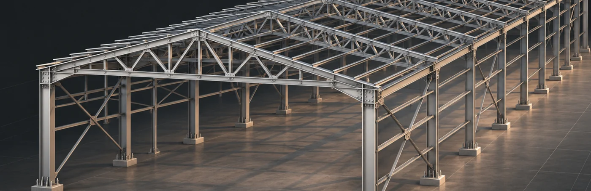
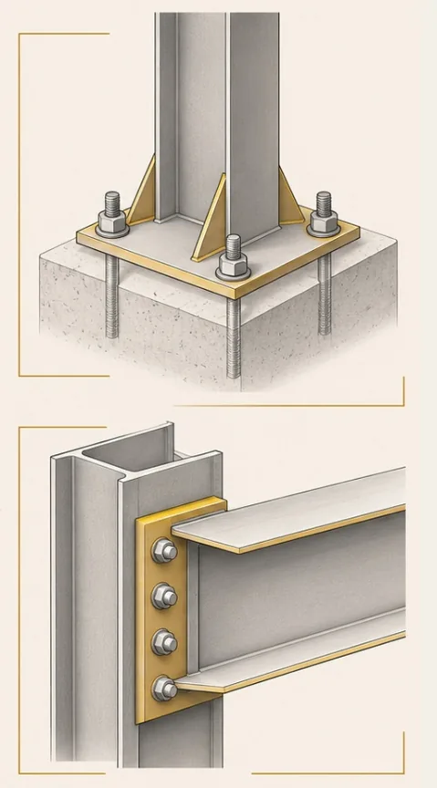
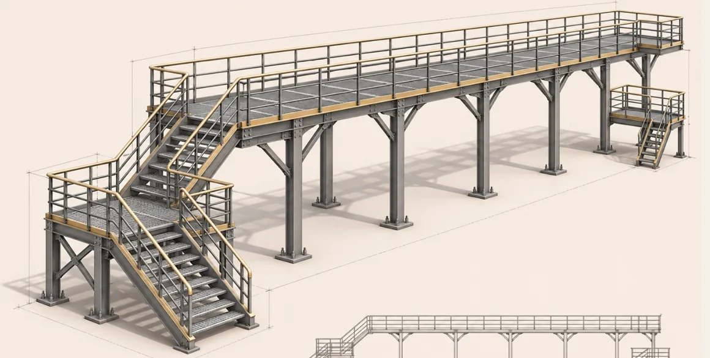

Каркасы зданий
Колонны, ригели и связи образуют несущую систему. Состав элементов определяет проект.
Несущие конструкции, монтажные узлы и опоры по чертежам проекта.
Смотреть ассортимент12 позиций




Несущая система из стали по проекту заказчика.
Изготовление по рабочим чертежам металлоконструкций.
Изготовление по рабочим чертежам металлоконструкций.
Изготовление по рабочим чертежам металлоконструкций.
Изготовление по рабочим чертежам металлоконструкций.
Изготовление по рабочим чертежам металлоконструкций.
Возможна разработка чертежей КМ и КМД по техническому заданию.
Возможна разработка чертежей КМ и КМД по техническому заданию.
Возможна разработка чертежей КМ и КМД по техническому заданию.
Геометрию конструкции и защитное покрытие определяет техническое задание объекта.

Геометрию конструкции и защитное покрытие определяет техническое задание объекта.
Геометрию конструкции и защитное покрытие определяет техническое задание объекта.
По этому запросу позиций нет.
Колонны, ригели и связи образуют несущую систему. Состав элементов определяет проект.
Стропильные и подстропильные фермы, сварные балки, прогоны и ригели. Изготовление по чертежам КМ и КМД.
Анкерные группы и узлы по проекту. Разработка чертежей КМ и КМД по техническому заданию.
Технологические площадки, переходные галереи и опорные конструкции. Параметры и покрытие определяются условиями объекта.